Nanbeige4.2-3B：释放紧凑模型的 agent 能力
Nanbeige LLM Lab, Boss Zhipin（BOSS 直聘）
摘要
我们提出 Nanbeige4.2-3B，这是一个具有 3B 非 embedding 参数的紧凑型通用 agent 模型。它在代码 agent、办公 agent 和复杂工具使用任务上表现强劲，同时在数学、编码和科学方面保持极具竞争力的推理能力。Nanbeige4.2-3B 使用 Looped Transformer 在 28T token 上从头预训练，通过复用层堆栈在不增加参数的情况下提升容量。构建 SFT 数据与轨迹时，我们通过真实部署和大规模合成，扩展可执行环境、任务素材及 agent 框架的多样性。RL 流程对 Think 与 Non-Think 回答应用混合模式 RLHF，以提高模型整体质量、减少失败案例；采用长度受控的推理 RL，平衡准确率与推理效率；采用结合结果奖励和过程奖励的 agent RL，稳定长时程训练。广泛评测表明，Nanbeige4.2-3B 在多种 agent 基准上超越包括 Qwen3.5-9B、Gemma4-12B 在内的更大模型，同时在推理和对齐任务上保持竞争力。与 OpenClaw 结合时的表现，进一步支持其作为紧凑本地个人助手的用途。模型 checkpoint 位于 https://huggingface.co/Nanbeige/Nanbeige4.2-3B。
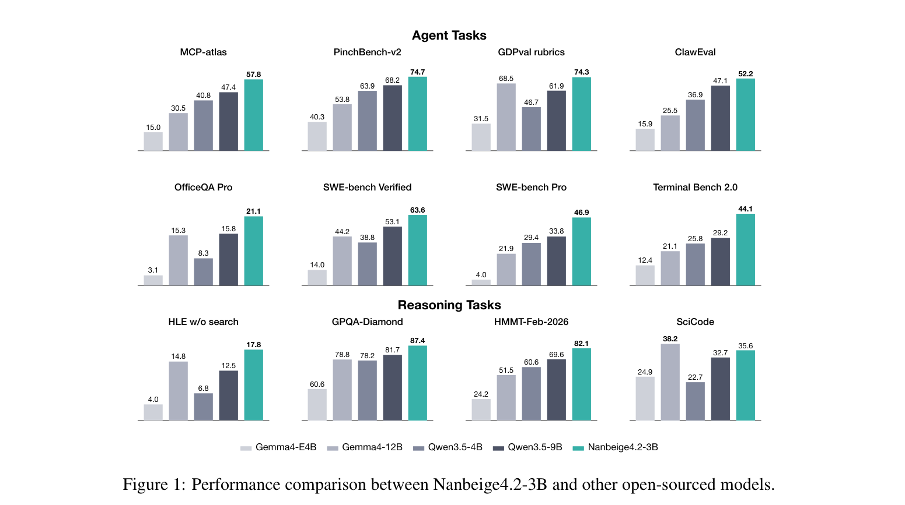
预印本。
1 引言
近期研究表明，小语言模型在数学推理、竞赛编程及其他可验证任务上能够取得强大性能 [28, 30]。另一些研究探索将推理与工具使用结合，用于深度搜索等特定 agent 场景的紧凑模型 [31]。然而，强大的 agent 必须跨异构环境操作、处理代码仓库与办公文档、从失败中恢复，并在长时程轨迹中持续推进。将这些能力整合进一个小模型仍具挑战。
现有研究通常通过面向特定任务的训练赋予小语言模型先进的 agent 能力。得到的模型往往专注于仓库级编码或协同办公等单一领域 [11, 3]。尽管在目标环境中有效，这些工作仍未回答：一个紧凑模型能否在不牺牲通用推理能力的情况下支持多样化 agent 能力。为研究这一问题，我们提出 Nanbeige4.2-3B，旨在最大限度增强通用 agent 能力，同时保留强大推理表现。
Nanbeige4.2-3B 不增加参数规模，而是采用 Looped Transformer [2]。该架构复用同一个 transformer 堆栈，让隐藏状态额外通过一遍，在不引入额外参数的情况下提高有效模型容量。通过扩展语料、优化数据混合，并使用这一循环架构在 28T token 上从头预训练，我们获得了强大的基础模型，为后续后训练奠定坚实基础。
预训练之后，我们通过监督微调（SFT）培养广泛的 agent 能力。首先构建混合环境池，包含真实环境与大量合成环境。在其中，我们利用多样化任务素材和 agent 框架，构建涵盖仓库级软件工程、复杂工具使用，以及以产物为中心的办公任务、基于实际执行的轨迹。随后利用执行信号与基于评分细则的评估，在轨迹和轮次两个层级进行筛选，以维持大规模数据质量。
在 SFT 模型基础上，我们进一步开发面向回答质量、推理效率及稳定 agent 学习的多阶段 RL 流程。首先对 Think 与 Non-Think 回答开展两阶段 RLHF，缓解幻觉、重复生成和指令遵循错误等常见失败模式。随后引入长度受控的推理 RL，在简洁推理与充分探索之间取得平衡，提高推理效率。最后，结合结果奖励与过程奖励进行 agent RL，提供更密集的信用分配，稳定复杂轨迹上的学习。
所得模型在其规模下展现出广泛的 agent 能力。在复杂工具使用、办公 agent 与代码 agent 基准中，Nanbeige4.2-3B 表现强劲，在多种评测上超越大得多的 Qwen3.5-9B [20] 和 Gemma4-12B [25]。它在数学、编码、科学推理及对齐方面也保持竞争力。部署在 OpenClaw [23] 等通用 agent 框架中时，它在日常辅助、办公流程和深度研究上表现良好，进一步支持其作为紧凑本地助手的用途。
据我们所知，Nanbeige4.2-3B 是这一规模下首个在保留强大通用推理性能的同时，展现代码 agent、办公 agent 及复杂工具使用能力组合的开源模型。我们将其开源以支持紧凑通用 agent 的研究，并希望这一发布促进对严格参数预算下发展 agent 能力的进一步探索。
2 预训练
本节首先介绍 Looped Transformer 架构、循环深度与初始化策略的选择，以及预训练数据方案的改动，随后将预训练基础模型与相近参数规模的开源模型进行评估比较。
2.1 架构
为在固定参数预算下提高有效深度与推理容量，Nanbeige4.2-3B 采用 Looped Transformer 架构 [2]。隐藏状态自底向上通过 transformer（接续下一页）
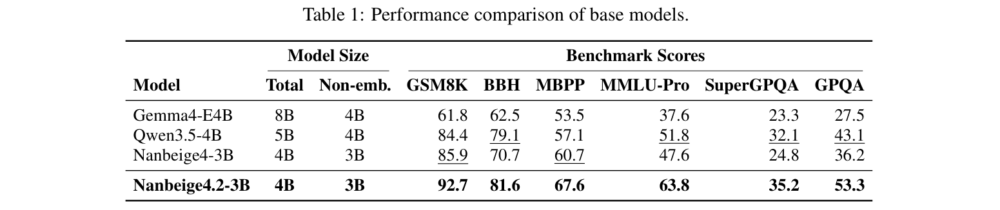
（接续上一页）各层后，会再次输入相同的层堆栈，额外通过一遍。这在不引入另一组参数的情况下，提高了有效计算深度与模型容量。
从头训练 Looped Transformer。获得循环模型的一种方式，是先预训练标准 transformer，再通过 upcycling [34, 32] 将其转为循环架构。我们将这一方式与从头训练循环架构比较。实验中，从头训练明显更好，说明模型能从整个预训练期间对重复复用层的表征适应中获益，而非只在模型训练完成后引入循环。
循环深度选择。我们研究了通过共享层堆栈的次数。实验中，两遍配置实现了最有利的权衡：相对标准 transformer，它保留约 75% 的 token 效率，同时显著提高容量。进一步增加遍数仅带来微小额外提升，却显著拖慢训练并降低优化稳定性。
KV cache 共享与规模配置。为减少重复计算带来的推理内存开销，我们研究了不同循环遍次共享 KV cache 的变体。尽管共享配置将 KV cache 减半，其性能收益始终低于完整、不共享的循环配置。因此，Nanbeige4.2-3B 保留完整循环，以优先保证模型性能。除循环配置外，我们还调节 transformer 堆栈深度与隐藏宽度，寻求训练和推理期间模型能力与效率的平衡。
2.2 数据方案
预训练语料包含 28T token，在规模与质量上均超过 Nanbeige4.1。我们进一步优化数据混合，提高数学、代码及合成问答数据的采样权重，发现这对紧凑模型尤为有益。还在预训练混合数据中加入少量 agent 轨迹数据，这是向 agent 预训练迈出的初步一步。进一步扩展 agent 数据的多样性、质量及覆盖范围，仍是未来的重要方向。
2.3 预训练评测
我们选择多样化基准，包括侧重推理的指标（GSM8K [6]、BBH [24]、MBPP [1]）和侧重知识的指标（MMLU-Pro [27]、SuperGPQA [9]、GPQA [21]）。表 1 将 Nanbeige4.2-3B-Base 与相近参数规模的基础模型比较，包括 Nanbeige4-3B-Base、Qwen3.5-4B-Base 和 Gemma4-E4B-Base。Nanbeige4.2-3B-Base 持续优于 Nanbeige4-3B-Base，也显著优于其他基础模型。结果表明，将 Looped Transformer 结构与改进的预训练数据方案相结合是有效的。
3 后训练
本节介绍用于发展 Nanbeige4.2-3B 推理与 agent 能力的后训练流程。该流程将可扩展的 SFT 数据与轨迹构建（接续下一页）
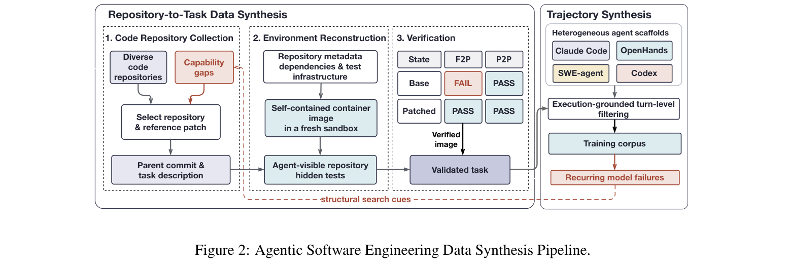
（接续上一页）与多阶段 RL 方案相结合，以改善回答质量、推理效率和长时程 agent 行为。随后，我们在通用与 agent 基准以及本地个人助手场景中评测所得模型。
3.1 数据
我们整理并合成大规模、多领域后训练语料，涵盖 agent 软件工程、复杂工具使用及 agent 协同办公。通过系统扩展任务多样性与难度边界，我们旨在推动紧凑模型接近性能上限，探索高质量、可扩展监督能够释放的能力极限。
3.1.1 Agent 软件工程：从代码仓库到轨迹的合成
与单轮代码生成不同，现实中的 agent 编码要求模型浏览复杂仓库、从模糊规范中推断意图、定位缺陷路径、协调修改多个文件，并通过闭环执行验证正确性。为大规模构建高质量轨迹监督，我们建立仓库级数据合成流程。系统将历史 GitHub 开发活动转化为自动化环境支持的可执行任务，同时利用模型失败反馈，让任务分布与 agent 能力协同演化。从代码仓库到任务的数据合成流程如图 2 所示。
能力引导的代码仓库收集。为确保数据多样性和规模，我们先收集涵盖多种编程语言、项目规模与应用领域的代码仓库，从中构建范围明确、具备可执行验证的软件工程任务。为进一步识别最有潜力提升模型能力的仓库，我们让模型运行一小组种子训练任务，分析并分类失败模式，再根据暴露的能力缺口选择仓库与补丁。这样既保持仓库和问题设置的多样性，也增强对模型存在系统性弱点的能力领域的覆盖。
可执行环境重建与任务合成。准备好仓库并选定补丁后，我们通过分析仓库元数据、依赖规范及测试基础设施，重建执行环境，再在隔离沙箱中从父提交构建自包含容器镜像。任务根据所选补丁合成，但向 agent 暴露的仓库中不包含补丁本身和任务专用评分测试。隐藏测试仅在评估时注入。
验证与闭环任务演化。合成轨迹之前，我们使用基于原始源代码与测试变更构建的可执行验证器验证每个任务。Fail-to-pass 测试确认目标行为在基础仓库中不存在、由参考补丁恢复；pass-to-pass 测试保护现有功能免于回归。我们还审查任务描述、隐藏测试与参考补丁是否表达一致的行为约定，修订（接续下一页）
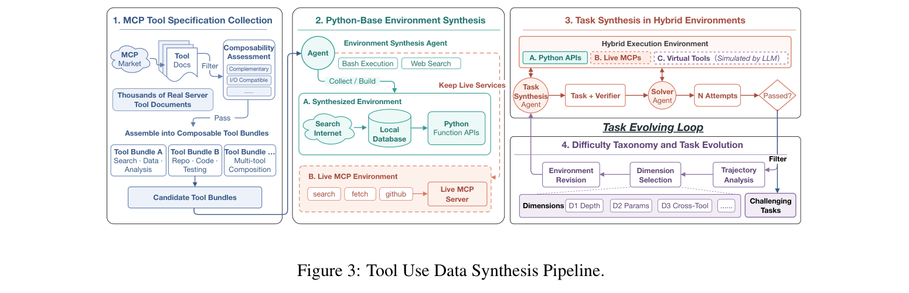
（接续上一页）可以修复的任务，并丢弃损坏、不稳定或定义不足的任务。在常规推理与训练期间，模型反复出现的失败会被自动收集，并转为后续仓库挖掘所用的结构化搜索线索。这一闭环机制扩展任务空间，系统聚焦模型自身演化中发现的弱点。
跨多样化框架的轨迹合成。为防止模型过拟合特定提示模板或工具使用约定，我们在容器沙箱中部署多个异构 agent 框架，包括 Claude Code、OpenHands、SWE-agent 及基于 Codex 的专门驱动。给定相同仓库状态和 fail-to-pass 验证任务，各 agent 独立并行探索、解决问题。不同的系统提示、上下文压缩策略与编辑接口会带来不同解法策略，例如广泛探索搜索与局部精准编辑。汇集这些互补轨迹，能够形成强调跨框架通用推理与修复策略、而非特定框架交互模式的训练语料，提高对未见过的 agent 接口和工具 schema 的泛化能力。
基于执行的轮次级过滤。为确保数据质量，我们仅保留所得补丁通过指定目标测试与回归测试的轨迹。进一步在轮次级过滤错误工具调用、不终止循环、冗余动作与上下文截断，优先保留简洁轨迹，同时保留必要调试和恢复步骤。最后，将所有轨迹规范化为统一的多轮 schema，包含观测到的助手消息、工具调用及环境反馈。
3.1.2 工具使用：通过真实与模拟混合环境扩大轨迹合成
我们收集并合成大量高质量工具使用轨迹。在为 Nanbeige4.1 [29] 开发的数据合成流程之上，通过构建整合真实 API、可执行工具接口及模型模拟环境组件的混合环境，进一步扩展工具任务的多样性与复杂度。如图 3 所示，框架包括四个组成部分：工具规范收集、可执行环境合成、任务合成，以及支持自动标注和自适应演化的难度分类体系。
MCP 工具规范收集。我们从 MCP 市场收集数千份真实 MCP 服务器的工具规范文档，评估各自的可组合性，即是否能与其他工具协同支持复杂多步骤工具使用场景。具有足够组合潜力的工具随后被分组为工具包，作为下游任务构建的基础。
基于 Python 的可执行环境合成。对每个工具文档包，一个具备网页搜索与 Bash 执行能力的环境合成 agent 会自动从互联网获取相关真实数据，并将其持久化到本地数据库。随后，它使用 Python 将每个工具重建为可调用函数接口，创建兼有真实数据与完整工具集的自包含执行环境。
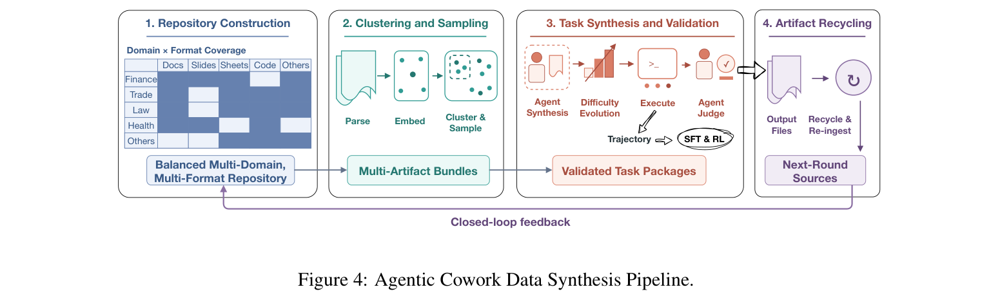
混合环境中的任务合成。除基于 Python 的可执行环境外，我们为网页搜索、网页抓取和代码仓库访问等工具保留在线 MCP 服务，因为其动态且具有时效性的输出，无法由静态数据库忠实捕获。对于依赖大型运行时环境、难以用 Python 重现的工具，则使用模型模拟其行为和输出。因此，合成流程整合了三种互补环境：（1）实时在线 MCP 服务；（2）Python 实现的本地工具；（3）模型模拟的虚拟工具。该设计既支持具有复杂数据依赖的定制工具使用场景，也支持需要真实网络交互的通用工具使用，在环境多样性与生态真实性之间取得平衡。
难度分类与自适应任务演化。为确保合成任务具有足够难度与复杂度，我们预定义难度分类体系，从工具使用链深度、信息检索难度、参数推断复杂度等多维度系统刻画任务。依据当前环境，一个可执行 Bash 的任务合成 agent 会生成自然语言任务规范，以及用于程序化正确性评估的 Python 验证函数。合成后，求解 agent 多次尝试每个任务。可靠解决的任务轨迹反馈给任务合成 agent，以识别模型能力边界，并选择性地沿相关维度增加难度、演化任务，建立迭代闭环。
快速验证集构建。与此同时，我们构建紧凑的留出任务集，在开发期间快速验证。该任务集涵盖代表性工具包、混合环境类型及难度等级，并与训练数据不相交。在全面评测前，它支持快速、可复现地评估连续的数据合成与强化学习迭代是否改善工具使用性能。
3.1.3 Agent 协同办公：通过以产物为中心的数据整理扩展复杂办公任务
除基础工具使用外，agent 还必须处理涉及报告、幻灯片、电子表格及其他产物的专业办公流程，这些能力对知识工作者的生产力至关重要。为使基础模型具备这类 agent 协同办公能力，我们开发以产物为中心的数据整理流程，通过合成、演化和回收任务素材，扩展多样、复杂的真实办公流程。具体包括产物库构建、基于向量相似度的领域聚类、任务合成、轨迹合成及闭环产物复用，如图 4 所示。
产物库构建。我们收集金融、贸易、法律、医疗及其他专业领域的材料，构建均衡的产物库，涵盖报告、幻灯片、电子表格、PDF、邮件等异构格式，并调整其相对比例，以实现广泛、贴近现实的覆盖。
基于 embedding 的领域聚类。我们将收集的产物解析并规范化为结构化表示，编码到共享 embedding 空间，再依据（接续下一页）
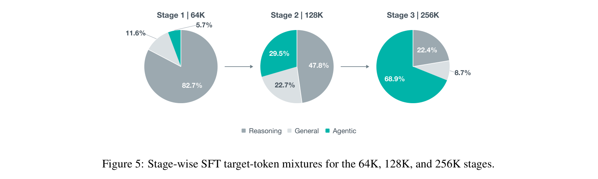
（接续上一页）语义与领域相似度进行聚类。进一步在每个簇内对产物分组和采样，为下游任务合成构建既连贯又多样的多产物组合。
任务、评分细则与轨迹合成。任务合成 agent 在沙箱工作区中交互式探索和操作所选产物组合，合成办公任务及评估细则。我们划分难度等级，并沿跨产物依赖、工具使用需求、工作流长度、约束和验证要求等多个维度迭代演化任务。随后，开源模型执行所得任务，生成工具使用轨迹和交付产物。独立的评判 agent 评估每份交付产物对任务规范的忠实程度、对应评分细则的一致性，以及执行轨迹的整体质量，仅保留高质量样本用于后续合成轮次。
产物闭环回收。经过验证的交付产物重新摄入产物库，作为后续合成轮次的源材料。这一闭环逐步扩展任务分布，支持生成越来越多样、复杂的办公工作流。
3.2 训练方案
我们的训练方案包含四个阶段：监督微调（SFT）、用于混合思考的两阶段 RLHF、带长度控制的推理 RL，以及采用以动作为中心的评分细则的 agent RL。
3.2.1 SFT
从预训练 checkpoint 开始，我们采用三阶段课程开展监督微调，将最大训练上下文长度从 64K 逐步扩展至 128K、256K token。我们不保持固定的数据混合比例，而是随着模型推理基础增强，逐步将监督目标 token 的分布从以 STEM 为中心的推理，转向长时程 agent 交互。
三阶段课程。64K 阶段的监督目标 token 混合以推理导向 STEM 数据为主（82.7%），另外包含 11.6% 通用指令数据和 5.7% agent 数据，为科学、数学和工程问题求解建立基础。128K 阶段调整为 47.8% 推理导向 STEM 数据、22.7% 通用指令数据、29.5% agent 数据，向更长上下文的指令遵循、工具使用及多轮环境交互过渡。模型获得足够强的推理基础后，256K 阶段将主要训练目标转向 agent 能力。我们将 68.9% 监督目标 token 分配给 agent 数据，同时保留 22.4% 推理导向 STEM 数据和 8.7% 通用指令数据，以增强长时程规划、工具调用、执行反馈利用及中间失败恢复能力。三阶段混合比例如图 5 所示。
轮次级损失掩码。成功轨迹仍可能含有错误或无效的中间轮次。我们利用执行反馈和基于评分细则的评估，为每个助手轮次分配二元损失掩码 \(m_t\)。不可靠轮次不计入 SFT 损失（\(m_t=0\)），但与（接续下一页）
（接续上一页）其产生的观测一同保留在后续轮次的上下文中。这样既保留完整交互上下文，又不对错误轮次进行训练，使模型能够学习在长时程任务中如何从错误恢复。
3.2.2 用于混合思考的两阶段 RLHF
经过混合领域 SFT 后，紧凑模型仍存在不稳定的生成行为，包括重复推理、循环反思、延迟终止、答案重复、格式错误及异常续写。为处理这些失败情况，并为后续推理与 agent RL 建立稳定基础，我们首先进行涵盖 think 与 non-think 回答的两阶段 RLHF。
我们训练逐点奖励模型，独立评估每个回答的整体质量。奖励偏好正确、相关、格式良好且适当终止的回答，抑制重复、无效续写和畸形输出。此外，奖励同时考虑安全性与用户友好性，确保模型遵守指定生成行为时保持无害、友好的交互。一个核心发现是，通用 RLHF 学到的行为正则化在两个不同维度上展现强泛化能力：
跨任务泛化。通用 RLHF 不仅改善指令遵循，还提升数学推理、编码及 agent 性能。这一观察挑战了将 RLHF 主要视为安全和对话风格控制机制的传统看法。避免重复、遵守输出格式、适当终止等行为发挥了轨迹级正则化的作用。在复杂 agent 任务中，许多失败并非源于错误推理，而是生成循环、畸形输出或异常续写打断了下游执行。消除这些失败，使模型已有的推理能力得以更可靠地发挥。
跨模式泛化。主要从 Non-Think 回答中学到的行为约束，可直接泛化到 Think 模式生成。尽管第二阶段主要训练对通用查询的 non-think 回答，也显著减少了 Think 模式下的循环反思、冗余推理和异常续写。这表明结构化生成、重复控制和终止意识并非特定模式的技能，而是两种回答模式共享的底层能力。
为简明展示这些改进，表 2 报告三个能力类别的代表性结果：对齐任务 AA-LCR1、推理任务 LiveCodeBench-V6 [12]、agent 任务 PinchBench-V22。对每个基准，比较 SFT、Think-RLHF 以及最终 Think-to-Non-Think RLHF checkpoint 的准确率、平均输出长度及不良案例率（存在格式错误或超过长度限制的数据比例）。所有 checkpoint 均使用相同 decoding 配置，在 Think 模式下评估。三个基准一致表明，两阶段 RLHF 在改善任务性能的同时，产生更短、更稳定的生成轨迹。
3.2.3 带长度控制的推理 RL
在通用 RLHF 后，我们进一步开展推理 RL，增强 Think 模式能力。与主要优化任务性能的 Nanbeige4.1 不同，本版本追求准确率提升，同时约束推理长度。为此，我们引入依赖问题的 Think 模式 RL 长度控制目标，将固定长度预算与连续、难度感知的惩罚结合，鼓励模型对可可靠解决的问题简洁推理，同时保留对困难问题的探索。
离线预算构建。针对每个问题 \(q\)，我们收集本阶段之前各 checkpoint 的成功历史 rollout，将这些正确回答长度的中位数设为长度预算 \(b_q\)。预算仅计算一次，并在整个训练过程中保持固定。
难度感知的长度惩罚。训练在约束阶段与自由扩展阶段交替进行：前者惩罚超长回答，后者关闭惩罚，以保留探索。
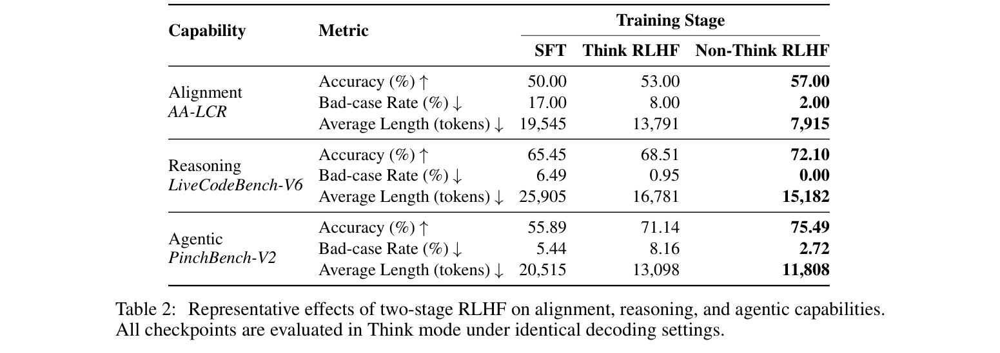
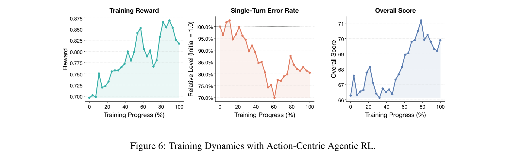
每个阶段的步数是两个独立超参数。在约束阶段，给定长度为 \(L_i\) 的回答、最大 rollout 长度 \(L_{\max}\) 及基础任务奖励 \(r_i^{\mathrm{base}}\)，我们将最终奖励塑形为：
\[r_i=r_i^{\mathrm{base}}-\alpha\,p_q\left[\frac{L_i-b_q}{L_{\max}-b_q}\right]_0^1.\tag{1}\]
其中，\([x]_0^1=\min(\max(x,0),1)\)，\(\alpha>0\) 约束惩罚幅度，\(p_q\) 是当前 rollout 组中完全正确回答的比例。因此，该惩罚具有难度感知性：预算内的回答始终不受惩罚；超出预算时，惩罚随归一化超额长度和问题当前通过率共同增加，从而鼓励对可可靠解决的问题简洁推理，同时不抑制仍有难度的问题。由于惩罚采用减法，而非对任务奖励进行门控，它保留正确性差异，并在预算边界处保持连续；对于二元奖励，\(\alpha<1\) 还进一步保证无论长度如何，正确回答始终优于错误回答。
3.2.4 采用以动作为中心的评分细则的 agent RL
在通用工具使用、搜索、协同办公和编码等多样 agent 场景中，我们设计动作评估细则，诊断和评估 agent 的行为缺陷。这些细则衡量工具调用准确率、每轮对任务完成贡献的信息增益等维度，其得分作为过程级奖励，在轮次级惩罚反复发生的动作错误。
在这一规模下，数据选择同样重要。我们使用推理 RL 模型估计任务通过率，将 agent RL 限制在相对简单的任务，即轨迹短、pass@8 分数相对较高的任务。我们发现，相比更困难或时程更长的任务，这类任务能为紧凑模型带来更稳定的优化与更大的性能收益。
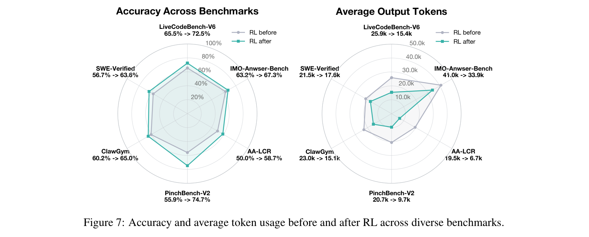
采用上述数据与奖励设计，我们开展 agent RL，并在第 3.1.2 节的快速验证任务上跟踪训练动态。如图 6 所示，我们报告以初始 checkpoint 归一化的单轮动作错误率和整体任务得分。尽管轨迹多样性与任务难度导致波动，训练奖励整体呈上升趋势。同时，归一化动作错误率下降约 20%，整体得分从 66.0 提升至训练期间最高 71.0。这表明，将结果奖励与以动作为中心的过程奖励结合，能够抑制反复出现的动作错误，改善最终任务性能。
3.2.5 强化学习带来的性能提升
为刻画完整 RL 流程的累积效果，我们在六个涵盖数学与代码推理、对齐、软件工程及 agent 任务执行的基准上，评估 RL 前后的 checkpoint。如图 7 所示，RL 后的 checkpoint 在这些基准上使用更少输出 token，同时取得更高准确率。
3.3 评测
我们从两个互补视角评估模型：（1）通用与 agent 能力；（2）本地个人助手表现。第一部分评估复杂工具使用、编码、办公 agent，以及数学与科学推理、竞赛编程、指令遵循。各基准共同刻画模型在标准化评测协议下的 agent、推理与对齐能力。第二部分关注实际本地助手应用。这些基准不孤立衡量单项能力，而是在统一 agent 框架中，评估涉及多步规划、工具交互、办公生产力及深度研究的端到端任务。这一设置更贴近模型本地部署的实际使用方式。两部分共同提供模型通用能力及其在实际 agent 应用中有效性的全面视图。
3.3.1 通用与 agent 能力
我们通过多样化基准，评测 Nanbeige4.2-3B 的四大类能力：
- 通用 agent。GDPval Rubrics [10]、AgentIF-Oneday [5]、OfficeQA-Pro [17]、PinchBench-V2、ClawGym [3]、Claw-Eval [33] 和 MCP-Atlas [4] 评估通用 agent 能力，包括办公生产力、多步骤任务执行、工具使用及真实工作流完成。
- 代码 agent。SWE-Bench Verified [13]、SWE-Bench Pro [8] 和 Terminal-Bench 2.0 [16] 通过仓库级代码修改、调试、终端交互和自主开发任务，评估软件工程性能。
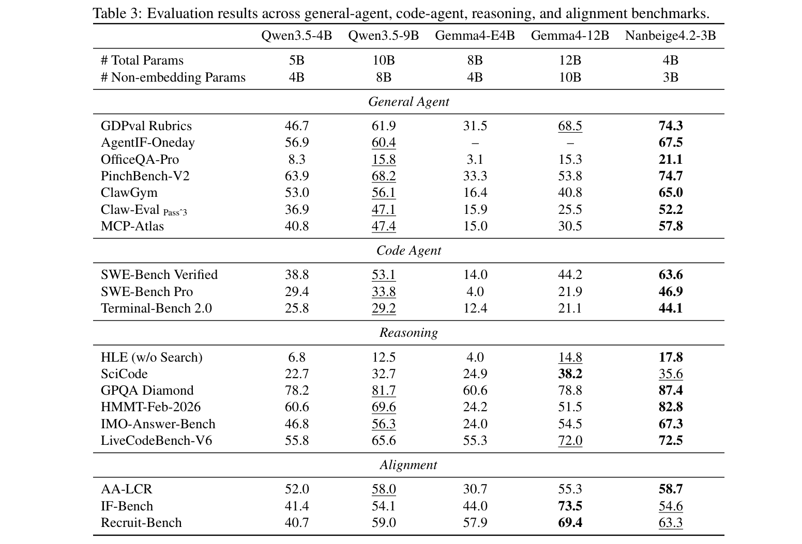
- 推理。HLE [18]、SciCode [26]、GPQA-Diamond、HMMT-Feb-2026 [7]、IMO-Answer-Bench [15] 和 LiveCodeBench-V6，涵盖科学、数学与代码推理。
- 对齐。AA-LCR 和 IF-Bench [19] 评估长上下文推理及复杂指令遵循能力。我们还纳入内部基准 Recruit-Bench，涵盖企业招聘（B2C）与候选人求职（C2B）场景，评估模型在真实企业招聘工作流中的对齐情况。
作为对照，我们纳入相近或更大规模的开源模型：Qwen3.5-4B、Qwen3.5-9B、Gemma4-E4B 和 Gemma4-12B。详细评测设置与各基准专用协议见附录 B。
整体结果。表 3 汇总整体评测结果。Nanbeige4.2-3B 仅有 3B 非 embedding 参数，在所有报告的通用 agent 和代码 agent 基准上均取得最佳成绩，超越更大的 Qwen3.5-9B、Gemma4-12B。结果涵盖复杂工具使用、办公流程、仓库级软件工程及终端任务，展现出广泛的 agent 能力，而非仅专精于单一环境。
Nanbeige4.2-3B 还在六个推理基准中的五个上取得最佳结果，同时在对齐任务上保持竞争力。Gemma4-12B 在 IF-Bench 和 Recruit-Bench 上更好，但 Nanbeige4.2-3B 在显著更小的参数预算下，在 agent、推理与对齐评测之间实现了更强的整体平衡。
3.3.2 本地个人助手
凭借较小参数规模，Nanbeige4.2-3B 足够紧凑，适合高效本地部署，同时保留强大推理和工具使用能力。为评估它作为实际（接续下一页）
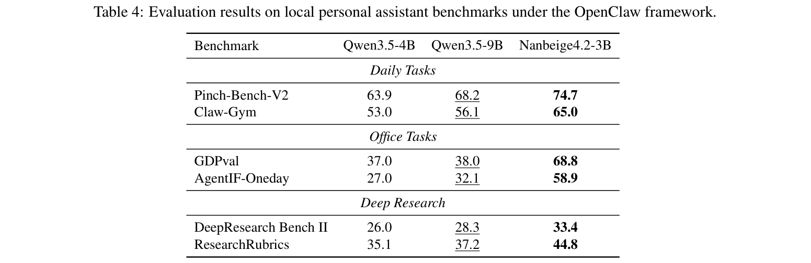
（接续上一页）本地助手的有效性，我们选择支持日常辅助、办公生产力与深度研究工作流的统一 agent 框架 OpenClaw，在三个代表性本地助手场景中评测 Nanbeige4.2-3B：
- 日常任务。PinchBench-V2 和 ClawGym 评估常见个人助手能力，包括任务执行、信息检索、工具交互及日常工作流自动化。
- 办公任务。GDPval 和 AgentIF-Oneday 评估文档理解、办公生产力和多步骤职场工作流。
- 深度研究。DeepResearch Bench II [14] 与 ResearchRubrics [22] 涵盖长时程规划、迭代信息检索、证据综合，以及跨多个外部资源的研究导向推理。
整体结果。表 4 报告了所有模型使用相同 OpenClaw 框架、工具集及协议所得结果。Nanbeige4.2-3B 在涵盖日常任务、办公工作流和深度研究的全部六个基准上，均超越 Qwen3.5-4B 与更大的 Qwen3.5-9B。三类任务均有一致收益，办公工作流上的提升尤为明显，表明模型的通用 agent 能力可以很好地迁移至统一本地助手场景。这些结果支持它作为紧凑本地个人助手的用途。
4 结论
我们提出 Nanbeige4.2-3B，在 3B 非 embedding 参数预算下，将广泛的 agent 能力与强大推理相结合。通过 Looped Transformer 架构、在改进的 28T-token 语料上从头预训练，以及可扩展的 SFT 轨迹构建和多阶段 RL 方案，Nanbeige4.2-3B 在代码 agent、办公 agent 及复杂工具使用任务上取得扎实表现，同时在数学、编码和科学推理上保持高度竞争力。它在本地个人助手工作流中的表现，进一步展示了紧凑 agent 模型的实际潜力。
展望未来，我们将在受限计算预算下持续改进模型容量与效率。在架构方面，基于 Nanbeige4.2，我们正在改善循环内部的层组织方式、不同深度之间的信息传递与复用，以及将局部 n-gram 上下文作为外部记忆融入 token embedding 的方式3。这些方向旨在仅增加极少 FLOPs 的情况下提高性能。我们还在探索线性与稀疏 attention 机制，以更高效地建模长上下文。在 agent 方面，我们将沿三个维度继续扩展后训练：任务难度、环境数量与多样性、轨迹质量。除后训练外，我们计划研究如何在预训练期间更早建立 agent 能力。我们将训练并发布更大的 Nanbeige 模型，探索利用它们蒸馏出更强的小模型。
3 初步实现已包含在随 Nanbeige4.2 发布的模型代码中。
参考文献
[1] Jacob Austin, Augustus Odena, Maxwell Nye, Maarten Bosma, Henryk Michalewski, David Dohan, Ellen Jiang, Carrie Cai, Michael Terry, Quoc Le, et al. 使用大语言模型进行程序合成. arXiv preprint arXiv:2108.07732, 2021.
[2] Sangmin Bae, Yujin Kim, Reza Bayat, Sungnyun Kim, Jiyoun Ha, Tal Schuster, Adam Fisch, Hrayr Harutyunyan, Ziwei Ji, Aaron Courville, et al. Mixture-of-Recursions：学习动态递归深度以实现自适应 token 级计算. Advances in Neural Information Processing Systems, 38:96572–96617, 2026.
[3] Fei Bai, Huatong Song, Shuang Sun, Daixuan Cheng, Yike Yang, Chuan Hao, Renyuan Li, Feng Chang, Yuan Wei, Ran Tao, Bryan Dai, Jian Yang, Wayne Xin Zhao, et al. ClawGym：构建有效 Claw agent 的可扩展框架. arXiv preprint arXiv:2604.26904, 2026.
[4] Chaithanya Bandi, Ben Hertzberg, Geobio Boo, Tejas Polakam, Jeff Da, Sami Hassaan, Manasi Sharma, Andrew Park, Ernesto Hernandez, Dan Rambado, Ivan Salazar, Rafael M. O. Cruz, Chetan Rane, Ben Levin, Brad Kenstler, and Bing Liu. MCP-Atlas：基于真实 MCP 服务器的工具使用能力大规模基准. arXiv preprint arXiv:2602.00933, 2026.
[5] Kaiyuan Chen, Qimin Wu, Taiyu Hou, Tianhao Tang, Xueyu Hu, et al. AgentIF-Oneday：面向日常场景通用 AI agent 的任务级指令遵循基准, 2026.
[6] Karl Cobbe, Vineet Kosaraju, Mohammad Bavarian, Mark Chen, Heewoo Jun, Lukasz Kaiser, Matthias Plappert, Jerry Tworek, Jacob Hilton, Reiichiro Nakano, et al. 训练验证器以解决数学应用题. arXiv preprint arXiv:2110.14168, 2021.
[7] Jasper Dekoninck, Nikola Jovanović, Tim Gehrunger, Kári Rögnvaldsson, Ivo Petrov, Chenhao Sun, and Martin Vechev. 超越基准：MathArena 作为 LLM 数学评测平台. arXiv preprint arXiv:2605.00674, 2026.
[8] Xiang Deng et al. SWE-Bench Pro：AI agent 能解决长时程软件工程任务吗？ arXiv preprint arXiv:2509.16941, 2025.
[9] Xeron Du, Yifan Yao, Kaijing Ma, Bingli Wang, Tianyu Zheng, Minghao Liu, Yiming Liang, Xiaolong Jin, Zhenlin Wei, Chujie Zheng, et al. SuperGPQA：将 LLM 评测扩展至 285 个研究生学科. Advances in Neural Information Processing Systems, 38, 2026.
[10] Adam Fry, Boaz Barak, Chris Painter, Elizabeth Proehl, Grace Kim, Jason Kwon, Michele Wang, Olivia Watkins, Rachel Dias, Ronnie Chatterji, Samuel Miserendino, Tejal Patwardhan, and Tracy Yang. GDPval：评估 AI 模型在真实世界经济价值任务上的表现. arXiv preprint arXiv:2510.04374, 2025.
[11] Hamish Ivison, Junjie Oscar Yin, Rulin Shao, Teng Xiao, Nathan Lambert, and Hannaneh Hajishirzi. Tmax：终端 agent 的简单训练方案. arXiv preprint arXiv:2606.23321, 2026.
[12] Naman Jain, King Han, Alex Gu, Wen-Ding Li, Fanjia Yan, Tianjun Zhang, Sida Wang, Armando Solar-Lezama, Koushik Sen, and Ion Stoica. LiveCodeBench：对大语言模型代码能力进行全面、无污染的评测, 2024.
[13] Carlos E. Jimenez, John Yang, Alexander Wettig, Shunyu Yao, Kexin Pei, Ofir Press, and Karthik R. Narasimhan. SWE-Bench：语言模型能解决真实 GitHub issue 吗？ In International Conference on Learning Representations, 2024.
[14] Ruizhe Li, Mingxuan Du, Benfeng Xu, Chiwei Zhu, Xiaorui Wang, and Zhendong Mao. DeepResearch Bench II：通过专家报告中的评分细则诊断深度研究 agent. arXiv preprint arXiv:2601.08536, 2026.
[15] Minh-Thang Luong, Dawsen Hwang, Hoang H Nguyen, Golnaz Ghiasi, Yuri Chervonyi, Insuk Seo, Junsu Kim, Garrett Bingham, Jonathan Lee, Swaroop Mishra, et al. 迈向稳健的数学推理. In Proceedings of the 2025 Conference on Empirical Methods in Natural Language Processing, pages 35406–35430, 2025.
参考文献（续）
[16] Mike A. Merrill et al. Terminal-Bench：在命令行接口的高难现实任务上评测 agent. arXiv preprint arXiv:2601.11868, 2026.
[17] Krista Opsahl-Ong, Arnav Singhvi, Jasmine Collins, Ivan Zhou, Cindy Wang, Ashutosh Baheti, Owen Oertell, Jacob Portes, Sam Havens, Erich Elsen, Michael Bendersky, Matei Zaharia, and Xing Chen. OfficeQA Pro：端到端有据推理的企业级基准. arXiv preprint arXiv:2603.08655, 2026.
[18] Long Phan, Alice Gatti, Ziwen Han, Nathaniel Li, Josephina Hu, Hugh Zhang, and et al. 人类最后的考试, 2025.
[19] Valentina Pyatkin, Saumya Malik, Victoria Graf, Hamish Ivison, Shengyi Huang, Pradeep Dasigi, Nathan Lambert, and Hannaneh Hajishirzi. 可验证指令遵循的泛化. In Advances in Neural Information Processing Systems, volume 38, 2025.
[20] Qwen Team. Qwen3.5：迈向原生多模态 agent, February 2026.
[21] David Rein, Betty Li Hou, Asa Cooper Stickland, Jackson Petty, Richard Yuanzhe Pang, Julien Dirani, Julian Michael, and Samuel R. Bowman. GPQA：研究生级别、无法通过 Google 搜索轻易解答的问答基准. arXiv preprint, 2023.
[22] Manasi Sharma, Chen Bo Calvin Zhang, Chaithanya Bandi, Clinton Wang, Ankit Aich, Huy Nghiem, Tahseen Rabbani, Ye Htet, Brian Jang, Sumana Basu, Aishwarya Balwani, Denis Peskoff, Marcos Ayestaran, Sean M. Hendryx, Brad Kenstler, and Bing Liu. ResearchRubrics：用于评估深度研究 agent 的提示与评分细则基准. arXiv preprint arXiv:2511.07685, 2025.
[23] Peter Steinberger and contributors. OpenClaw：你自己的个人 AI 助手, 2026.
[24] Mirac Suzgun, Nathan Scales, Nathanael Schärli, Sebastian Gehrmann, Yi Tay, Hyung Won Chung, Aakanksha Chowdhery, Quoc Le, Ed H Chi, Denny Zhou, et al. 高难度 BIG-Bench 任务以及 chain-of-thought 能否解决它们. In Findings of the Association for Computational Linguistics: ACL 2023, pages 13003–13051, 2023.
[25] Gemma Team, Sherif El Abd, Vaibhav Aggarwal, Robin Algayres, Alek Andreev, Olivier Bachem, Ian Ballantyne, Cormac Brick, Victor Cărbune, Michelle Casbon, et al. Gemma 4 技术报告. arXiv preprint arXiv:2607.02770, 2026.
[26] Minyang Tian, Luyu Gao, Shizhuo Dylan Zhang, Xinan Chen, Cunwei Fan, Xuefei Guo, Roland Haas, Pan Ji, Kittithat Krongchon, Yao Li, et al. SciCode：由科学家整理的科研编码基准. In Advances in Neural Information Processing Systems, volume 37, 2024.
[27] Yubo Wang, Xueguang Ma, Ge Zhang, Yuansheng Ni, Abhranil Chandra, Shiguang Guo, Weiming Ren, Aaran Arulraj, Xuan He, Ziyan Jiang, et al. MMLU-Pro：更稳健、更具挑战的多任务语言理解基准. Advances in Neural Information Processing Systems, 37:95266–95290, 2024.
[28] Sen Xu, Shixi Liu, Wei Wang, Jixin Min, Yingwei Dai, Zhibin Yin, Yirong Chen, Xin Zhou, and Junlin Zhang. VibeThinker-3B：探索小语言模型可验证推理的前沿. arXiv preprint arXiv:2606.16140, 2026.
[29] Chen Yang, Ran Le, Yun Xing, Zhenwei An, Zongchao Chen, Wayne Xin Zhao, Yang Song, and Tao Zhang. ToolMind 技术报告：大规模、推理增强的工具使用数据集. arXiv preprint arXiv:2511.15718, 2025.
[30] Chen Yang, Guangyue Peng, Jiaying Zhu, Ran Le, Ruixiang Feng, Tao Zhang, Wei Ruan, Xiaoqi Liu, Xiaoxue Cheng, Xiyun Xu, et al. Nanbeige4-3B 技术报告：探索小语言模型的前沿. arXiv preprint arXiv:2512.06266, 2025.
[31] Chen Yang, Guangyue Peng, Jiaying Zhu, Ran Le, Ruixiang Feng, Tao Zhang, Xiyun Xu, Yang Song, Yiming Jia, Yuntao Wen, et al. Nanbeige4.1-3B：具备推理、对齐与行动能力的小型通用模型. arXiv preprint arXiv:2602.13367, 2026.
参考文献（续）
[32] Jian Yang, Wei Zhang, Shawn Guo, Zhengmao Ye, Lin Jing, Shark Liu, Yizhi Li, Jiajun Wu, Cening Liu, X Ma, et al. IQuest-Coder-V1 技术报告. arXiv preprint arXiv:2603.16733, 2026.
[33] Bowen Ye, Rang Li, Qibin Yang, Yuanxin Liu, Linli Yao, Hanglong Lv, Zhihui Xie, Chenxin An, Lei Li, Lingpeng Kong, et al. Claw-Eval：迈向自主 agent 的可信评测. arXiv preprint arXiv:2604.06132, 2026.
[34] Rui-Jie Zhu, Zixuan Wang, Kai Hua, Tianyu Zhang, Ziniu Li, Haoran Que, Boyi Wei, Zixin Wen, Fan Yin, He Xing, et al. 通过循环语言模型扩展潜在推理. arXiv preprint arXiv:2510.25741, 2025.
A 作者名单
作者按名字的字母顺序排列。带星号（*）的姓名表示曾经隶属于本团队的人员。Yang Song 为通讯作者，联系邮箱为 songyang@kanzhun.com。
Chen Yang, Chengrui Huang, Fufeng Lan, Hanhui Chen, Hao Zhou, Huatong Song*, Jiaqi Cao*, Jiaying Zhu, Jinlin Niu, Kai Wang, Lisheng Huang, Qiliang Liang, Ran Le, Ruixiang Feng*, Shuang Sun*, Tao Gu, Tao Zhang, Tianyu Luo, Yang Song†, Yun Xing, Yuntao Wen*, Ziyao Xu, Zongchao Chen, Zongqiang Li
B 评测设置
B.1 通用推理设置
除非另有说明，我们使用以下配置评测 Nanbeige4.2-3B：
- 温度：0.6。
- Top-p：0.95。
- Top-k：20。
- 上下文窗口：256k token。
B.2 代码 agent 评测
SWE-bench Verified：我们使用 OpenHands 作为 agent 框架，上下文窗口为 256k token，最大输出限制为 32k token。decoding 温度设为 1.0。每次任务运行的超时时间为 4 小时，最多 250 个交互轮次。最终性能指标取 8 次独立运行的平均值。
SWE-bench Pro：我们使用 SWE-agent 评测框架，上下文窗口为 256k token，最大输出限制为 32k token。decoding 温度设为 1.0。考虑到长时程任务的复杂度增加，每次运行给予 10 小时超时、最多 250 个交互轮次。最终结果取 8 次独立运行的平均值。
Terminal-Bench 2.0：我们使用 Harbor/Terminus-2 框架以及 JSON 输出解析器评测 Terminal-Bench 2.0。模型使用 256k 上下文窗口、32k token 最大输出限制和 1.0 的温度。每次运行分配 8 个 CPU 核、24GB RAM，4 小时超时及最多 250 个交互轮次。所有报告结果取 8 次独立运行的平均值。
B.3 通用 agent 评测
GDPval Rubrics：我们使用提供网页搜索工具及沙箱环境的内部评测框架。最终输出由在同一环境中担任评判的 agent 评分。该评判对每条评分细则进行评估，并将总分归一化至 0–100。
AgentIF-Oneday：采用与 GDPval Rubrics 相同的评测协议。
OfficeQA-Pro：使用内部评测框架，在最具挑战性的设置下评测：每个问题配有完整的原始 PDF 材料集合，不使用任何解析器，也不提示哪些文档相关。
Claw-Eval：我们仅评测并报告 157 个通用任务的结果。评测时保留完整推理上下文，例如不启用 sglang 服务的 reasoning-parser，以确保思考过程保留在上下文中。最终评分时，移除闭合 </think> 标签之前的内容。使用 DeepSeek-V4-Pro 作为评判模型，任务总超时为 3,600 秒。
MCP-Atlas：评测时启用系统提示，并在最终评分时移除闭合 </think> 标签之前的内容。使用 GLM-5.1 作为评判模型，单次调用和任务总超时分别设为 1,200 秒、3,600 秒，每个任务最多允许 20 轮工具使用。
B.4 基于 OpenClaw 的评测
为最大限度发挥模型潜力，我们在评测全程保留完整推理内容。为启用该设置，需要将模型加入 OpenClaw 的推理内容回放白名单。
PinchBench-V2：使用 OpenClaw 默认的免费 DuckDuckGo Search 后端。每个任务的超时为 10,800 秒，使用 Qwen3.7-Plus 作为评判模型。
Claw-Gym：采用与 PinchBench-V2 相同的评测设置。
GDPval Rubrics 与 AgentIF-Oneday：采用与 PinchBench-V2 相同的生成设置，使用 Qwen3.7-plus 对任务产物按评分细则打分。
DeepResearch Bench II：使用 Brave Search 作为搜索后端。每个任务超时为 3,600 秒，最多 200 个 agent 轮次。使用 DeepSeek-V4-Flash 作为评判模型，temperature=0，并遵循官方评判提示与分数汇总流程。
ResearchRubrics：采用与 DeepResearch Bench II 相同的评测设置，同时遵循 ResearchRubrics 官方评判提示及基准专用评测协议。
C 致谢
感谢 Guoliang Cheng、Jianyong Xia、Kewen Zhu、Shu Xu、Yanxi Xie 和 Zhihao Li 的讨论及对本项目的参与。